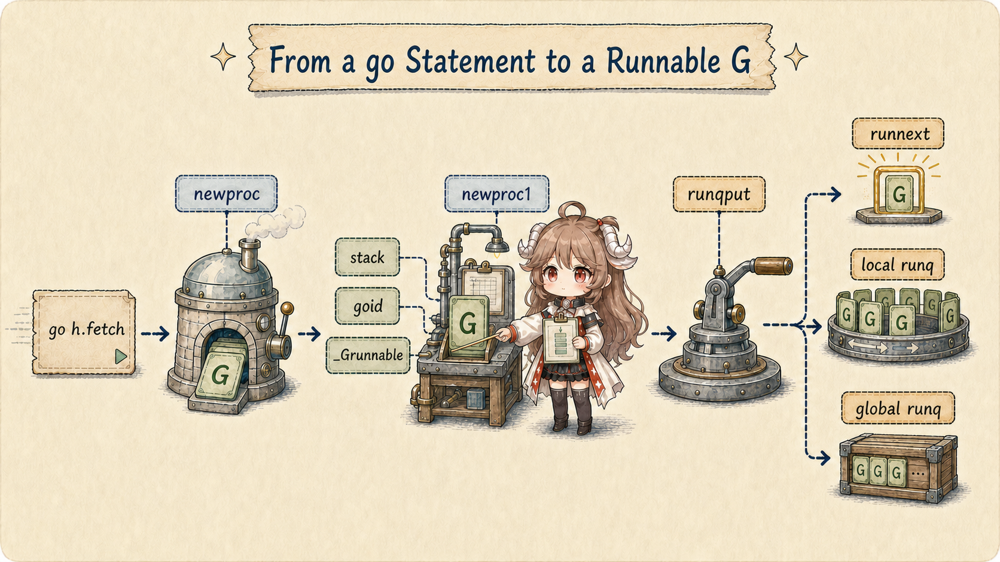
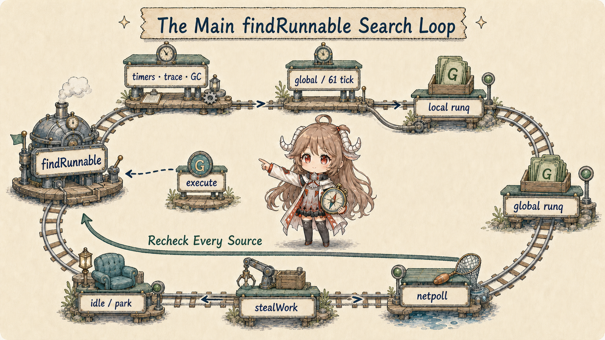
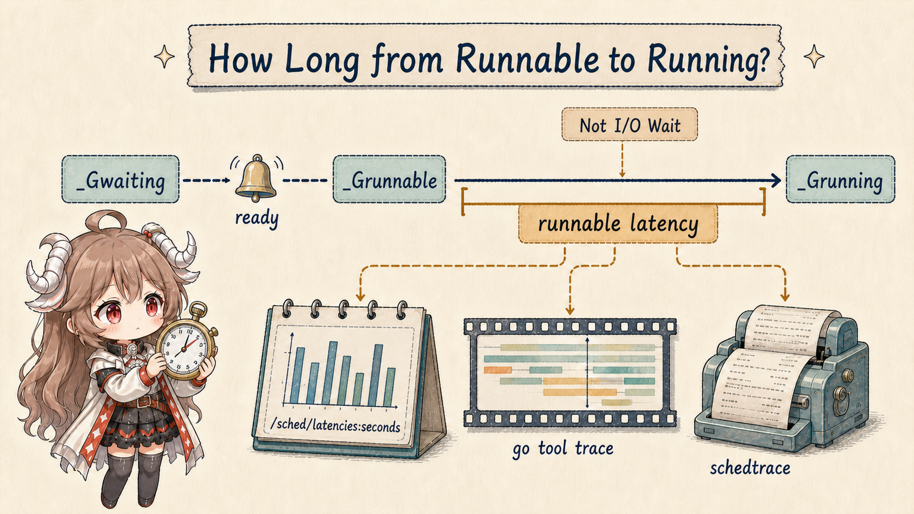

Reading contract: this chapter follows the ordinary user-goroutine path in Go 1.26.0 through creation, runnable, running, waiting, and wake-up. You should leave able to distinguish goroutine, thread, and P counts, waiting from runnable, and verify scheduling hypotheses with metrics and traces—without turning the internal 10 ms threshold or 256-slot run queue into language guarantees.
Direct evidence is pinned to Go 1.26.0, primarily runtime/proc.go and runtime/runtime2.go. Conceptual boundaries come from the official runtime HACKING guide; production observation uses runtime/metrics and Diagnostics. This is the current gc runtime, not a required mapping for every Go implementation.
1. Separate Three Counts That Are Often Collapsed
fetchd starts at most eight worker goroutines for eight URLs. That does not add eight threads, nor guarantee eight workers execute Go code simultaneously.
The scheduler manages three distinct resources:
| Symbol | Runtime object | Owns | Count relationship |
|---|---|---|---|
| G | runtime.g | Goroutine stack, saved scheduler context, state, ancestry | May far exceed threads and Ps |
| M | runtime.m | One OS thread, g0, current G, attached P | Syscalls/cgo may make M count exceed P count |
| P | runtime.p | Resources needed to run Go, local queue, allocator cache, timers | Exactly GOMAXPROCS |
The scheduler does not permanently bind a G to an M. It matches a runnable G, an M on which to execute, and a P granting the resources to execute Go. An M can run different Gs; a G can resume on a different M. If an M blocks in a syscall, it can release its P so another M continues Go work.
GOMAXPROCS limits parallel Go execution
Go 1.26 has one P per current GOMAXPROCS. With 1,000 runnable Gs and GOMAXPROCS=8, at most roughly eight threads execute user Go code at once,
while the remaining Gs wait in scheduler queues. Total threads may be higher because of syscalls, cgo, runtime work, and locked threads.
Since Go 1.25 the default can respond to container CPU limits; explicit environment or API settings affect that automation. Diagnose the observed metric, not only host core count.
2. State Is More Informative Than “Goroutine Count”
runtime2.go separates _Grunnable, _Grunning, _Gwaiting, _Gsyscall, and other states.
Equal goroutine counts can describe very different production conditions.
| State | Meaning | Typical source | Latency points toward |
|---|---|---|---|
_Grunnable | Queued and able to execute, but not executing | Creation, channel wake, I/O readiness, timer | CPU supply and scheduling competition |
_Grunning | Matched with M/P and executing Go | execute | CPU or the running code path |
_Gwaiting | Parked at a runtime wait point | Channel, mutex, timer, netpoll | A resource, not CPU access |
_Gsyscall | Inside a system call | Blocking syscall/cgo boundary | Kernel or foreign code |
“Many goroutines” alone is not a failure. A server may intentionally hold a large population waiting on connections; a much smaller population continuously runnable can signal CPU quota, excessive fan-out, a wake-up storm, or GC competition. Start with states and wait reasons, then interpret the total.
3. How go h.fetch Becomes a Runnable G
The compiler lowers a go statement to runtime.newproc. Its source comment is unusually direct: create a new G running fn and put it on the queue of Gs waiting to run.
// The compiler turns a go statement into a call to this.
func newproc(fn *funcval) {
gp := getg()
pc := sys.GetCallerPC()
systemstack(func() {
newg := newproc1(fn, gp, pc, false, waitReasonZero)
pp := getg().m.p.ptr()
runqput(pp, newg, true)
if mainStarted {
wakep()
}
})
}
newproc1 reuses a G before allocating one
newproc1 runs on the system stack. It first asks the current P's free-G pool through gfget; only if that fails does it call malg(stackMin)
and publish a new G. It clears g.sched, sets the initial SP, a PC returning through goexit, the function entry, parent goid, and creation PC.
It then assigns a goid and changes the G from _Gdead to _Grunnable.
newg := gfget(pp)
if newg == nil {
newg = malg(stackMin)
allgadd(newg)
}
newg.sched.sp = sp
newg.sched.pc = abi.FuncPCABI0(goexit) + sys.PCQuantum
gostartcallfn(&newg.sched, fn)
newg.parentGoid = callergp.goid
newg.gopc = callerpc
newg.goid = pp.goidcache
casgstatus(newg, _Gdead, _Grunnable)
Creation needs G metadata and an initial stack, but it commonly reuses an object and does not create a dedicated OS thread. The function body has not run yet:
_Grunnable means eligible, not started.
4. Local Run Queue, runnext, and Global Run Queue
A P currently contains a [256]guintptr local queue and a separate runnext slot. The size is a Go 1.26.0 implementation detail;
the useful model is that local queues preserve locality while the global queue supports overflow and fairness.
runnext is not unlimited priority
newproc calls runqput with next=true, so the new G first tries to occupy runnext. When selected, it inherits the remainder of the current time slice,
reducing latency for communicating Gs. If the slot already has a G, the old one moves to the normal local queue. Platforms without sysmon avoid the optimization so ping-pong work cannot starve everything else.
What happens when the local queue is full
With room, runqput writes at the ring tail. When full, runqputslow takes half the local work and places that batch plus the new G on the global queue.
It redistributes a batch rather than merely putting the newest G elsewhere, making work available to other Ps.
if t-h < uint32(len(pp.runq)) {
pp.runq[t%uint32(len(pp.runq))].set(gp)
atomic.StoreRel(&pp.runqtail, t+1)
return
}
runqputslow(pp, gp, h, t) // half the local Gs + new G → global5. How schedule and findRunnable Locate Work
One scheduler round has a small shell: schedule asks findRunnable for a G, handles special cases such as locked Ms, and enters execute.
The complicated part is discovering work.
func schedule() {
gp, inheritTime, tryWakeP := findRunnable()
// Spinning, GC worker, and locked-M handling omitted.
execute(gp, inheritTime)
}
This is not one FIFO
findRunnable checks timers near the top, then trace-reader and GC work. To stop a small set of local Gs from occupying a P indefinitely,
it samples the global queue whenever schedtick % 61 == 0. Ordinary business work then checks the local queue followed by the global queue.
With no queued G, the scheduler performs non-blocking netpoll, then allows spinning Ms to use stealWork across other Ps and their timers.
If nothing appears, it prepares to release its P and park the M, but rechecks queues, timers, and netpoll around that transition so newly submitted work cannot be left with every worker asleep.
Why work stealing takes a batch
runqsteal asks runqgrab for roughly half of another P's local queue. One stolen G returns immediately and the remainder populates the thief's local queue.
Batch balancing reduces repeated cross-P contention; randomized victim order and a cap on spinning Ms avoid turning idle search into excessive CPU use.
6. execute Turns Runnable into Running
Once a G is selected, execute points the M's curg at it, points the G's m back to the M, CASes
_Grunnable to _Grunning, clears waiting and preemption markers, and finally restores the saved context through gogo(&gp.sched).
mp.curg = gp
gp.m = mp
casgstatus(gp, _Grunnable, _Grunning)
gp.waitsince = 0
gp.preempt = false
// Trace, profiling, and time-slice work omitted.
gogo(&gp.sched)
Because G and M are associated here, ordinary application code must not assume a goroutine identity maps to one thread. Use runtime.LockOSThread only for real thread-local,
GUI, or cgo constraints, accepting the loss of scheduler flexibility.
7. Blocking Need Not Block the Thread: gopark and ready
When a goroutine cannot continue on a channel, mutex, timer, or netpoll, runtime code uses gopark to record a wait reason and
mcall(park_m) to switch to the M's g0 stack for the state transition. When the resource is ready, goready calls ready on the system stack:
casgstatus(gp, _Gwaiting, _Grunnable)
runqput(mp.p.ptr(), gp, next)
wakep()Chapter I's socket path lands here: netpoll changes I/O-ready Gs from waiting to runnable and injects them into scheduling. Some M/P runs them later. “I/O is ready” therefore does not mean “the handler resumed”; runnable latency can still intervene.
8. Preemption Offers a Chance, Not a Real-Time Deadline
A G that does not block must not own a P forever. In Go 1.26, sysmon's retake watches each P's schedtick. If one tick persists beyond the internal
forcePreemptNS = 10ms, it requests preemptone. That sets gp.preempt and stackguard0 = stackPreempt;
supported platforms also request asynchronous preemption through preemptM.
Ten milliseconds is an implementation threshold for requesting intervention, not a maximum run duration or latency SLO. Signal delivery, safe points, runtime critical sections, platform support, cgo/syscalls, and OS scheduling affect the actual handoff. Preemption improves fairness; it does not make Go hard real time.
9. Verify Scheduling with Runnable Latency

What /sched/latencies:seconds measures
The internal sched.timeToRun comment defines a distribution of time from _Grunnable to _Grunning.
runtime/metrics exposes it as the cumulative histogram /sched/latencies:seconds. Time waiting for I/O, channels, or mutexes is outside that interval.
samples := []metrics.Sample{
{Name: "/sched/gomaxprocs:threads"},
{Name: "/sched/goroutines/runnable:goroutines"},
{Name: "/sched/latencies:seconds"},
}
metrics.Read(samples)
histogram := samples[2].Value.Float64Histogram()Run the burst, trace, and handoff benchmark
scheduler_lab_test.go
starts 64 goroutines, waits until all are parked on a release channel, then closes that channel to make a visible runnable burst.
cd go-runtime/examples/fetchd
go test -run TestSchedulerBurst -trace scheduler.trace
go tool trace scheduler.trace
go test -run TestSchedulerMetricsAreAvailable
go test -bench BenchmarkGoroutineHandoff -benchmem
GODEBUG=schedtrace=1000,scheddetail=1 go test -run TestSchedulerBurst| Evidence | Answers | Does not answer alone |
|---|---|---|
| Scheduler metrics | Whether runnable population and latency stay abnormal | Which G waited where |
| Execution trace | G/P/M, unblock, syscall, and GC timing in one window | Long-term low-overhead trends |
schedtrace | Coarse snapshot of P, threads, and run queues | Fine causal history |
| Goroutine profile | Stacks and wait reasons at sample time | Past runnable queuing |
| CPU profile | Where CPU went while code ran | Runnable time without CPU |
10. Return to the fetchd Boundaries
- Concurrency is not parallelism. Fetch workers can wait on networking concurrently; CPU work remains bounded by P count and container quota.
- Bound fan-out before tuning the scheduler. Unbounded G creation amplifies memory, queues, pools, and wake-ups;
GOMAXPROCSis not backpressure. - Alert on waiting and runnable separately. Waiting usually points to a dependency; runnable points to execution supply or wake-up pressure.
- Do not use
runtime.Goschedas a correctness fix. Correctness should come from blocking boundaries, queues, and synchronization protocols. - Move from trend to window to source. Find the interval with metrics, capture a trace, then map state transitions back to source.
Keep one reusable conclusion: creating G is not creating a thread; runnable is not running; wake-up is not immediate resumption. A G must be matched with M/P before latency moves forward.
Chapter IV enlarges fetchd's result channel and follows chansend/chanrecv, sudog, semaphores, mutexes, and select to decide when to use channels or locks and where backpressure truly forms.
Source and Documentation References
- Go runtime HACKING: scheduler structures
- Container-aware GOMAXPROCS
- runtime/metrics package documentation
- Diagnostics in the Go ecosystem
- G status definitions
- runtime g, m, and p structures
- newproc and newproc1
- local run queues and work stealing
- findRunnable
- schedule
- execute
- gopark and goready
- sysmon retake and preemption threshold
- preemptone
- fetchd scheduler lab